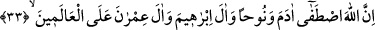
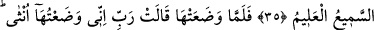
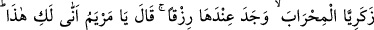

HAZRETİ MERYEM
33, 34. Allah birbirinden gelme bir nesil olarak Âdem’i, Nûh’u, İbrâhîm âilesi ile
İmrân âilesini seçip âlemlere üstün kıldı. Allah işiten ve bilendir.
35. İmrân’ın karısı şöyle demişti: “Rabbim! Karnımdakini azatlı bir kul olarak sırf
sana adadım. Adağımı kabul buyur. Şüphesiz (niyazımı) hakkıyla işiten ve
(niyetimi) bilen sensin.”
36. Onu doğurunca, Allah, ne doğurduğunu bilip dururken: Rabbim! Ben onu kız
doğurdum. Oysa erkek, kız gibi değildir. Ona Meryem adını verdim. Kovulmuş
şeytana karşı onu ve soyunu senin korumanı diliyorum, dedi.
37. Rabbi Meryem’e hüsnü kabul gösterdi; onu güzel bir bitki gibi yetiştirdi.
Zekeriya’yı da onun bakımı ile görevlendirdi. Zekeriya onun yanına, mâbede her
girişinde orada bir rızık bulur ve; “Ey Meryem, Bu sana nereden geliyor?” der; O
da: Bu, Allah tarafındandır. Allah, dilediğine sayısız rızık verir, derdi.
“Allah Âdem’i seçti.” Burada “seçmek” mânasına olan “ıstıfâ” kelimesi bir şeyin
temiz olanını seçip ayırmak, seçip almak mânasınadır. “Istısfâ” ile aynı mânaya
gelmektedir. Yani “Âdem’i kudsî nefis ile ona lâyık gördüğü ruhânî melekelerle,
cismânî olgunluklarla diğer mahlûkattan seçip ayırdı ki bu seçiliş onu peygamberlik
vazifesine hazırlamak içindir. Bütün peygamberlerde veya Meryem’de olduğu gibi,
onunla birlikte olan ve ondan neş’et edenlerde bu seçilmişlik sıfatı vardır. Yahud
Âdem’i bizzat yed-i kudretiyle yaratarak onu en güzel yaratılışa sahip kılması, esmâyı
öğretmesi, melekleri ona secde ettirmesi, cennette iskân etmesi gibi meziyetlerle